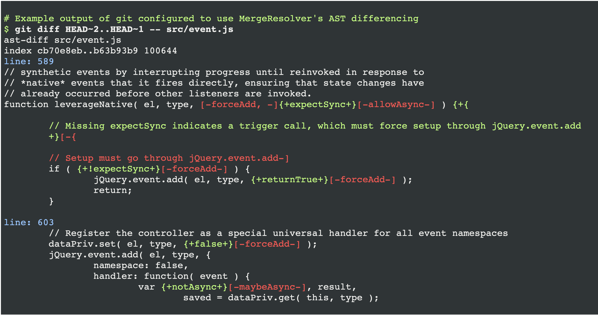
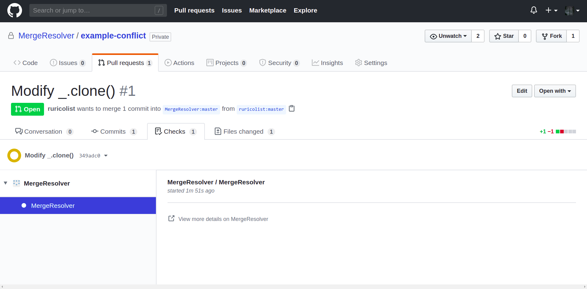
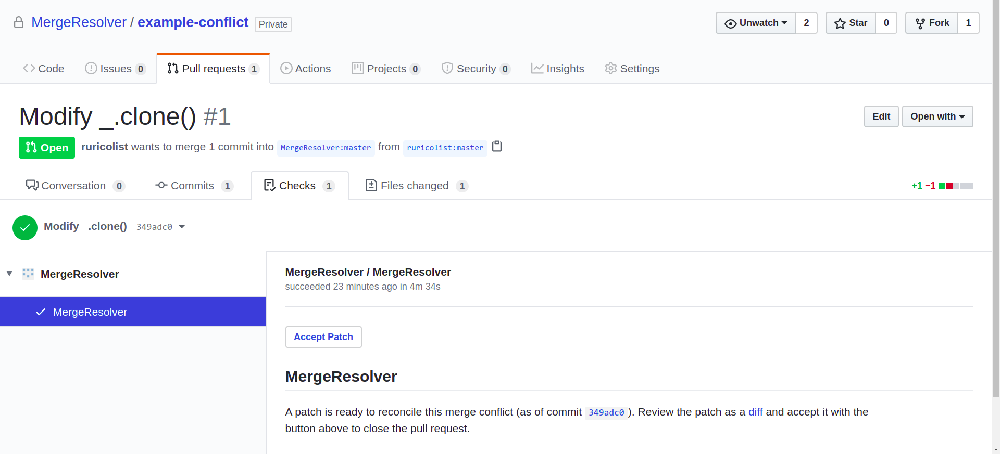

MergeResolver is a new GitHub app that automates resolving merge conflicts — but leaves developers in control.
Currently MergeResolver only supports JavaScript projects.
When you install MergeResolver on a repository, it waits for a conflict to happen. Conflicts can happen with new pull requests, or when a new commit to master conflicts with one or more open pull requests.
If a conflict happens, MergeResolver clones your repository and gets to work. First, it tries to avoid the conflict by retrying the merge, but on the Abstract Syntax Tree (AST) level.
By treating code as ASTs rather than simply a string of characters, MergeResolver recognizes code's structure and semantics. This ensures all potential conflict resolutions will parse as valid code, and in some cases cleanly reconciles changes that would conflict under Git's built-in, line-oriented merge algorithms (as in the above example).
If AST merging fails, things get more interesting. MergeResolver understands different strategies for reconciling merge conflicts – strategies mined from large datasets of real-world merge conflict resolutions (see On the nature of merge conflicts). With this knowledge it can generate possible conflict resolutions.
But how does it know which generated conflict resolutions are viable? MergeResolver relies on the only source of truth about a program's requirements: its test suite. MergeResolver finds a viable resolution by looking for a resolution that passes your program's test suite.
Once MergeResolver finds a resolution that passes your test suite, it uses GitHub's Checks API to provide a button (under the Checks tab on the pull request) that can be used to accept the resolution.
If you want to inspect the conflict resolution before accepting it, a link is provided to a diff of the merge resolution commit.
MergeResolver is currently available for direct installation. It is free for open-source projects to try. You can add MergeResolver to your Node-based JavaScript repository here.
Note that MergeResolver currently targets JavaScript, which means that your repository needs to have a package.json file. This is necessary so MergeResolver can run your test suite.
Support is available through a dedicated support repository. If you have a problem with MergeResolver, or an idea for improvement, please open an issue there.
Let us know what works well or not for you, and we'll strive to make MergeResolver useful enough that it becomes a staple of your team's development workflow.
This material is based upon work supported by the Defense Advanced Research Projects Agency (DARPA) under Contract No. D17PC00096. Any opinions, findings and conclusions or recommendations expressed in this material are those of the author(s) and do not necessarily reflect the views of the Defense Advanced Research Projects Agency (DARPA); or its Contracting Agent, the U.S. Department of the Interior, Interior Business Center, Acquisition Services Directorate, Division III.